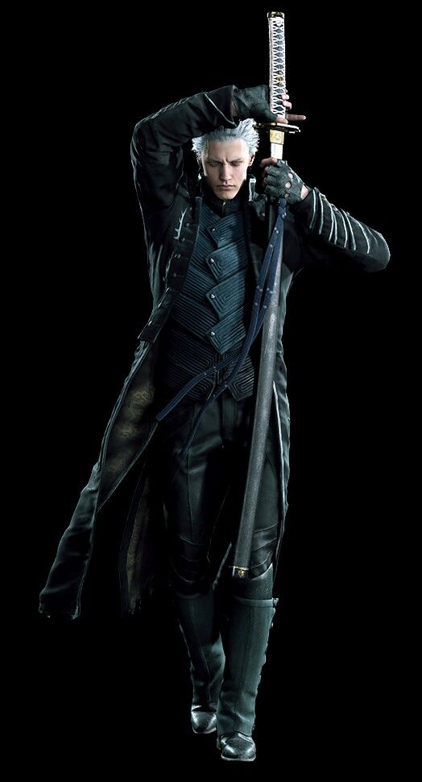
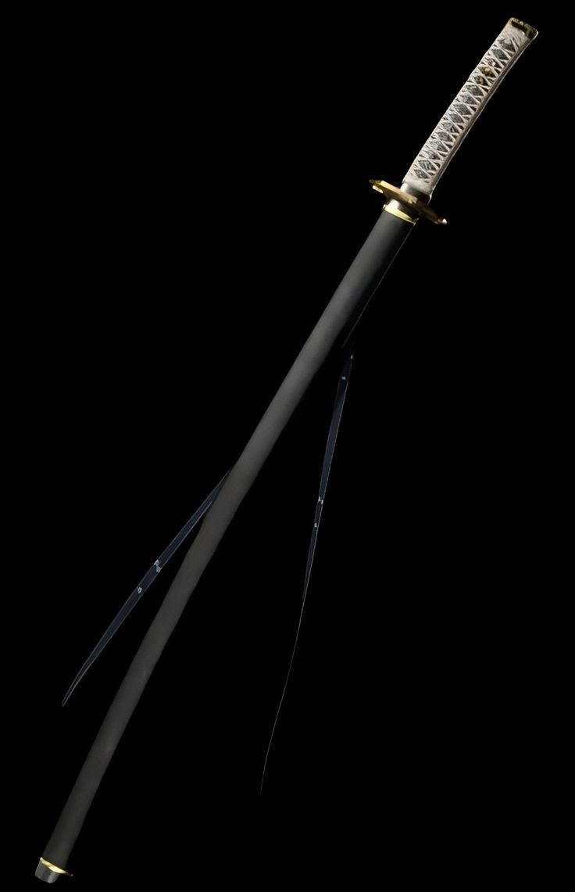

Биография
Вергилий — старший брат-близнец Данте, который долгое время был одним из главных антагонистов серии Devil May Cry. После переломного момента пути Вергилия и Данте разошлись, первый отверг свою человечность, и принял демоническое наследие их отца, второй же поступил совершенно иначе, поставив на первое место человеческое в себе. Вергилий был готов сделать всё возможное ради получения силы Спарды.
В отличие от Данте, Вергилий более спокойный, серьёзный и хладнокровный.
Боевой стиль
Орудует легендарной катаной «Ямато», используя смертоносные техники иайдо.В совершенстве владеет пространственной и темной магией, создавая призрачные лезвия для дальнего боя.В отличие от брата, практически не использует огнестрельное оружие.


Ямато
Ямато — легендарная катана Вергилия и одна из самых известных реликвий во вселенной Devil May Cry. Клинок когда-то принадлежал Спарде и был передан Вергилию как символ его наследия.
Главной особенностью меча считается способность рассекать пространство и границы между мирами. С его помощью Вергилий может открывать порталы, быстро перемещаться и выполнять мощные атаки. В отличие от других мечей, Ямато делает упор не на грубую силу, а на скорость, точность и мастерство владения клинком.
Внешне Ямато выполнен в традиционном японском стиле: длинный изогнутый клинок, круглая гарда и украшенные ножны. На протяжении всей серии игр меч играет важную роль в сюжете и неоднократно влияет на судьбу персонажей. Для Вергилия он является напоминанием о наследии отца и стремлении стать сильнее. Благодаря своему уникальному дизайну, способностям и значению для сюжета Ямато считается одним из самых известных и узнаваемых мечей в истории видеоигр.
Катана идеально отражает характер своего владельца: точность, дисциплину и стремление к совершенству.